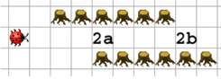

Kara will den Ausgang des Tunnels finden (Feld 2b). Dazu muss er zunächst den Tunnel durchqueren. Schreiben Sie ein Programm, das ihn auf dem ersten Feld nach dem Tunnel anhalten lässt – er soll nicht bis zum Ende der Gallerie laufen!